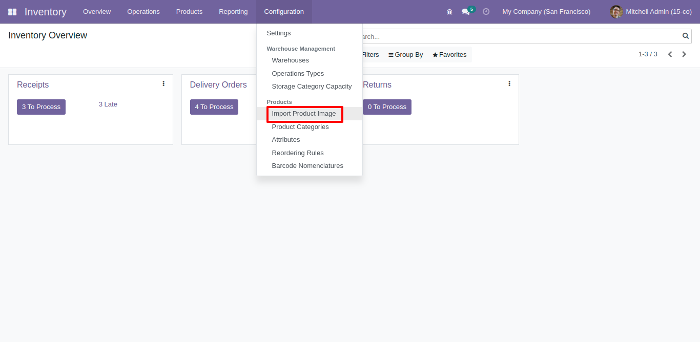
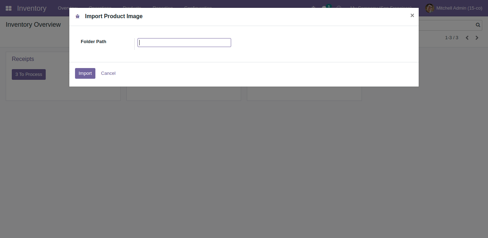

IMPORT PRODUCT IMAGES
If you have your product images as files you will have some difficulties to import it to odoo.
With the help of this module you can import product images seamlessly.
Pre-requisites
- Put all your product images in a folder
- Upload folder to server or put it in the addons folder
- Images names should be same as product name
- All types of odoo supported extensions can be used (.png, .jpg, .jpeg, ...)


For any queries or help contact : billybutcher0004@gmail.com